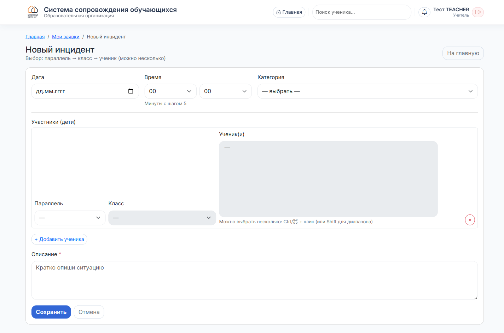
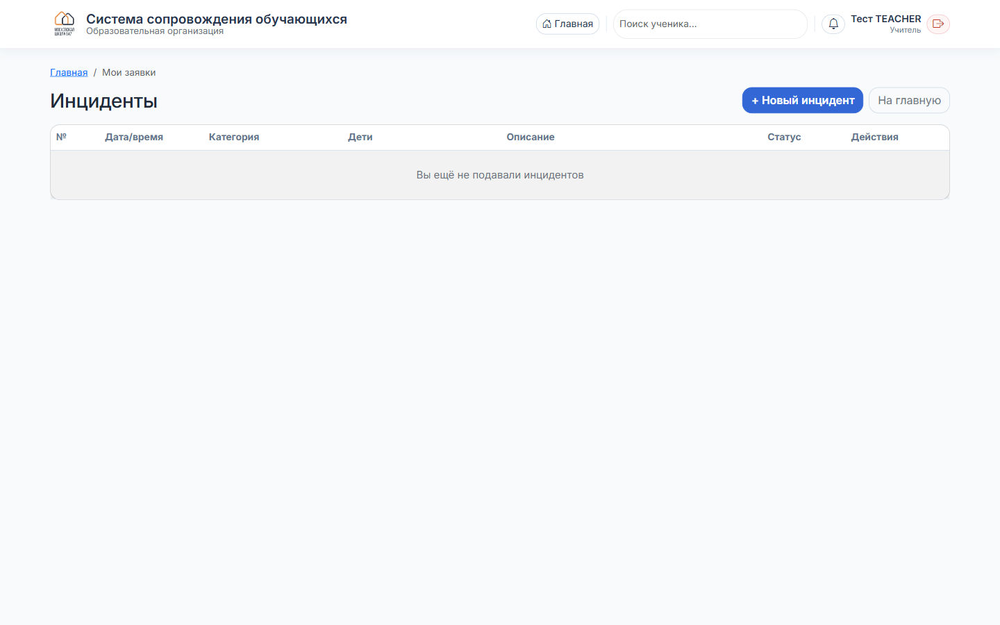

Учитель
Как подать инцидент
Зарегистрировать событие по ученику: травма, конфликт, буллинг, нарушение дисциплины.
1
Нажмите «Добавить инцидент»
На главной странице кликните плитку «Добавить инцидент» в блоке «Быстрые действия».

2
Заполните форму

- Дата и время — когда произошло событие.
- Категория — выберите из списка (травма, драка, буллинг, нарушение дисциплины и т. д.).
- Участники — сначала выберите параллель, затем класс, потом учеников. Можно несколько: удерживайте Ctrl или Shift для диапазона.
- Описание — кратко опишите ситуацию (обязательное поле).
Если участников из разных классов — нажмите «+ Добавить ученика» ещё раз.
3
Сохраните
Нажмите «Сохранить». Система автоматически переведёт вас в раздел «Мои заявки».
4
Отслеживайте статус — «Мои заявки»
Все ваши поданные инциденты — на главной → плитка «Мои заявки».

В таблице видно дату, категорию, учеников, описание и текущий статус (Новый / В работе / Закрыт и т. д.). Кнопки действий справа — редактировать или удалить свой инцидент.
Инцидент можно редактировать, пока его не взяли в работу. После — обратитесь к администратору или социальному педагогу.